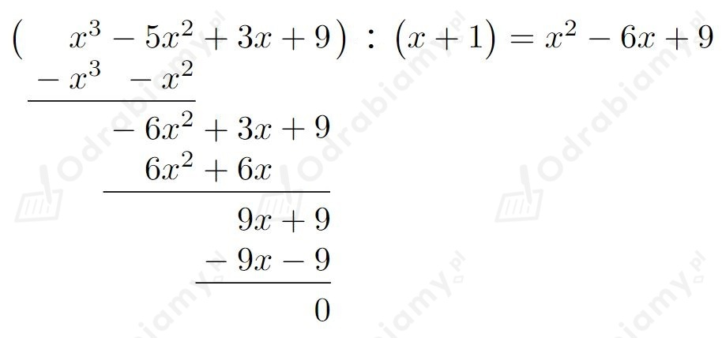
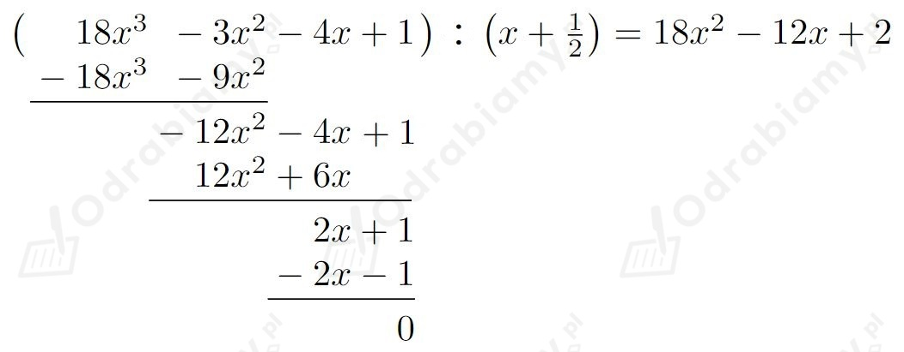

O wielomianie w wiemy, że po podzieleniu przez dwumian x-4 otrzymano iloraz x2-3x+1 i resztę 2.
Wyznaczmy wzór wielomianu w. Mamy:
Rozwiążemy równanie:
czyli
Wyraz wolny a0=-8 ma następujące dzielniki: -8, -4, -2, -1, 1, 2, 4, 8.
Stwierdzamy, że liczba 1 jest pierwiastkiem całkowitym tego równania, ponieważ
Zatem wielomian po lewej stronie tego równania jest podzielny przez dwumian x-1. Mamy:
Czyli dane równanie możemy zapisać w postaci:
czyli
Dany jest wielomian w określony wzorem:
Wielomian w jest podzielny przez dwumian x-m. Zatem na mocy twierdzenia Bezouta liczba m jest pierwiastkiem tego wielomianu. Mamy stąd:
czyli
Dany jest wielomian w określony wzorem:
czyli
Zatem
Wyznaczmy pierwiastki tego wielomianu rozwiązując równanie:
Pierwiastkami wielomianu w są liczby: -3, 2 oraz 3.
Dane są wielomiany:
Dany jest wielomian w określony jako:
Wyznaczmy wzór wielomianu w. Mamy:
Wielomian w jest wielomianem zerowym. Mamy stąd:
czyli
Dany jest wielomian w trzeciego stopnia, którego pierwiastkami są liczby -2 i 3. Niech b będzie trzecim pierwiastkiem tego wielomianu.
Wielomian w zapiszemy w postaci:
Reszta z dzielenia wielomianu w przez dwumian x+1 wynosi -8, czyli w(-1)=-8. Dodatkowo wiemy, że punkt (0, -24) należy do wykresu tego wielomianu.
Otrzymujemy stąd układ równań:
Zatem wielomian w określony jest wzorem:
Rozwiążemy nierówność w(x)⩾0. Mamy:
Pierwiastkami wielomianu w są liczby -2 (pierwiastek podwójny) i 3 (pierwiastek pojedynczy).
Naszkicujmy przybliżony wykres wielomianu w. Mamy:
czyli
a)
Dany jest wielomian w określony wzorem
Podany wielomian ma pierwiastek wymierny należący do przedziału (1, 3/2).
Rozwiążemy nierówność
Stwierdzamy, że liczba 4/3 jest pierwiastkiem wymiernym tego równania, ponieważ
Zatem wielomian w jest podzielny przez dwumian x-4/3. Mamy:
Czyli daną nierówność możemy zapisać w postaci:
Naszkicujmy przybliżony wykres wielomianu w. Mamy:
czyli
b)
Dany jest wielomian w określony wzorem
Podany wielomian ma pierwiastek wymierny należący do przedziału (-1, -1/2).
Stwierdzamy, że liczba -4/5 jest pierwiastkiem wymiernym tego równania, ponieważ
Zatem wielomian w jest podzielny przez dwumian x+4/5. Mamy:
Czyli
Zatem pierwiastkami tego wielomianu są liczby:
Dany jest wielomian w określony wzorem:
Liczby x1, x2, x3 są pierwiastkami tego wielomianu.
Z treści zadania wiemy, że:
Zatem:
Stąd mamy:
Pozostałymi pierwiastkami tego wielomianu są liczby:
Zapiszmy wzór tego wielomianu:
Rozwiążemy nierówność:
Liczby -2, 0, 2 są pierwiastkami pojedynczymi wielomianu po lewej stronie nierówności.
Naszkicujmy przybliżony wykres wielomianu po lewej stronie nierówności. Mamy:
czyli
a)
Dana jest funkcja f określona wzorem:
Wyznaczmy dziedzinę funkcji f. Rozważmy zatem nierówność:
Stwierdzamy, że liczba -1 jest pierwiastkiem całkowitym tego równania, ponieważ
Zatem wielomian po lewej stronie tego równania jest podzielny przez dwumian x+1. Mamy:

Zatem:
Pierwiastkami wielomianu po lewej stronie nierówności są liczby: -1 (pierwiastek pojedynczy) oraz 3 (pierwiastek podwójny).
Zatem dziedziną funkcji f jest:
b)
Dana jest funkcja f określona wzorem:
Wyznaczmy dziedzinę funkcji f. Rozważmy zatem nierówność:
Stwierdzamy, że liczba -1/2 jest pierwiastkiem wymiernym tego równania, ponieważ
Zatem wielomian po lewej stronie tego równania jest podzielny przez dwumian x+1/2. Mamy:

Zatem:
Pierwiastkami wielomianu po lewej stronie nierówności są liczby: -1/2 (pierwiastek pojedynczy) oraz 1/3 (pierwiastek podwójny).
Zatem dziedziną funkcji f jest:
Dany jest wielomian w określony wzorem:
gdzie p jest parametrem.
Uzasadnimy, że p≠0 jest dwukrotnym pierwiastkiem tego wielomianu.
Zapiszmy wielomian w w postaci:
Liczba p (p≠0) jest pierwiastkiem dwukrotnym tego wielomianu.
a)
Dany jest wielomian w trzeciego stopnia określony wzorem:
Wyznaczymy, dla jakich wartości współczynników tego wielomianu, dla dowolnego argumentu x∈R zachodzi równość:
czyli
Dana równość zachodzi dowolnego argumentu x∈R wtedy, gdy
b)
Dany jest wielomian w trzeciego stopnia określony wzorem:
Wykażemy, że jeśli dla dowolnego x∈R wielomian w spełnia warunek w(x)=w(-x), to wielomian ten nie może być wielomianem trzeciego stopnia.
Mamy:
czyli
Skoro otrzymaliśmy a=0, to podany wielomian nie może być jest wielomianem trzeciego stopnia.